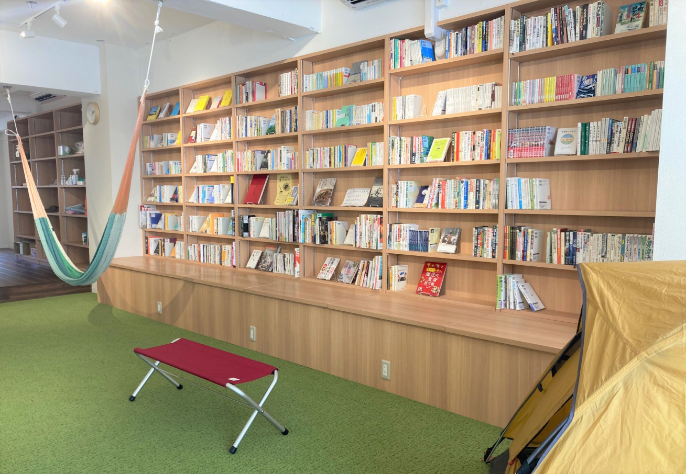
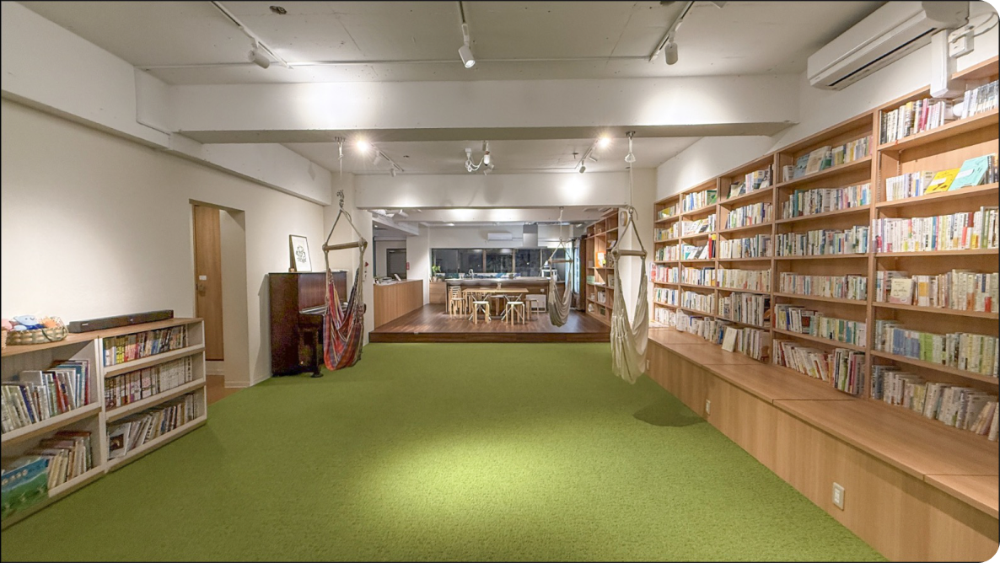
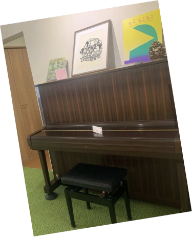
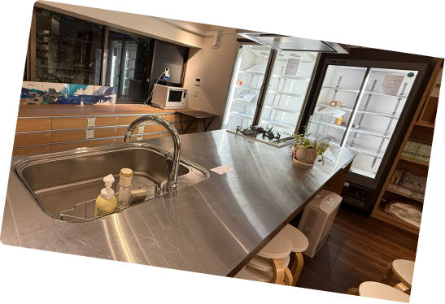

てわたし図書館の写真を準備中
図書館
約3,000冊の本に囲まれた読書・交流スペース。
#業務用冷蔵庫有
#毎週ワークショップ開催
#キッチン有
#民間図書館
#約3000冊の本

最新のお知らせ・イベント情報はInstagramでご案内しています。
図書館の予定は下部のカレンダーでご確認いただけます。
キッチンやピアノを使ったイベント・ワークショップのご相談を受け付けています。
動画素材の公開準備中です。
人と人が出会う場所で、
あたたかな言葉を交わす。
みんなが気持ちよく
使える空間を大切に。
本や道具、空間を
次の人へ手わたす。

北習志野てわたし図書館は、地域の皆さんから寄贈いただいた約3,000冊の本を揃えた私営の図書館です。地元が習志野台の夫婦で運営しています。
地域が元気になってほしいという想いから始まった、本を通じて人と人がつながる場所です。
蔵書を検索する北習志野てわたし図書館は、本を読むだけでなく、音楽や食を通じて人々が集い、交流できる場所です。
館内にはピアノやスピーカーを備え、小規模な演奏会や発表会を開催できます。また、大型冷蔵庫・冷凍庫、オーブンレンジを備えたキッチンでは、お料理教室や仲間との集まりなど、さまざまな活動を楽しめます。
さらに、レンタルスペースとして24時間365日利用でき、ワークショップやイベントなども開催可能です。自分の「好き」や「得意」を生かし、新しい挑戦や交流が生まれる場所としてご活用いただけます。
本と出会い、音楽を楽しみ、食を囲む。そんな何気ない時間から人と人がつながり、地域に新しい可能性が広がっていく図書館です。
レンタルスペース詳細

約3,000冊の本に囲まれた読書・交流スペース。
料理教室や食を囲む集まりに。大型冷蔵庫、冷凍庫、オーブンレンジなどを備えています。
演奏会やワークショップなど、多様な使い方ができます。
開館・イベント予定はこちらからご確認ください。
北習志野てわたし図書館
詳しい場所・経路は地図からご確認ください。